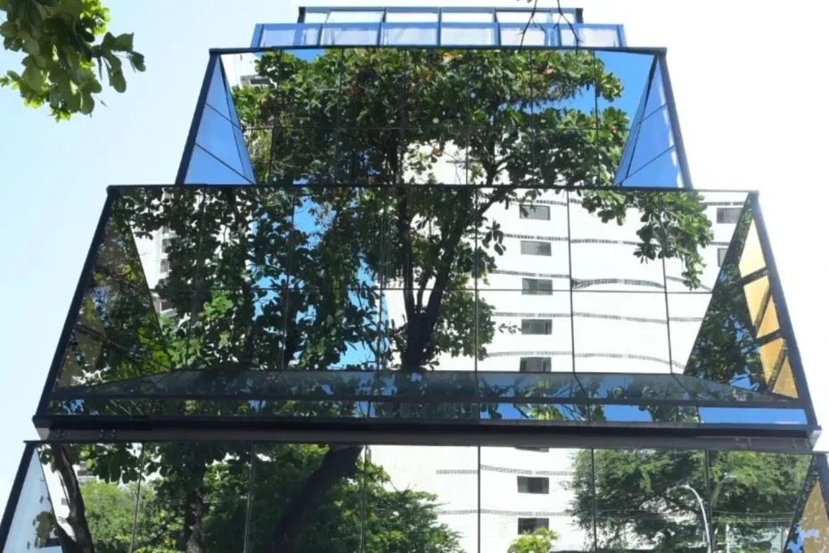
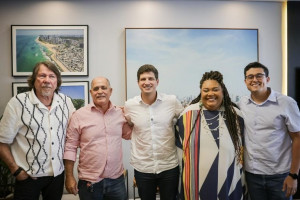
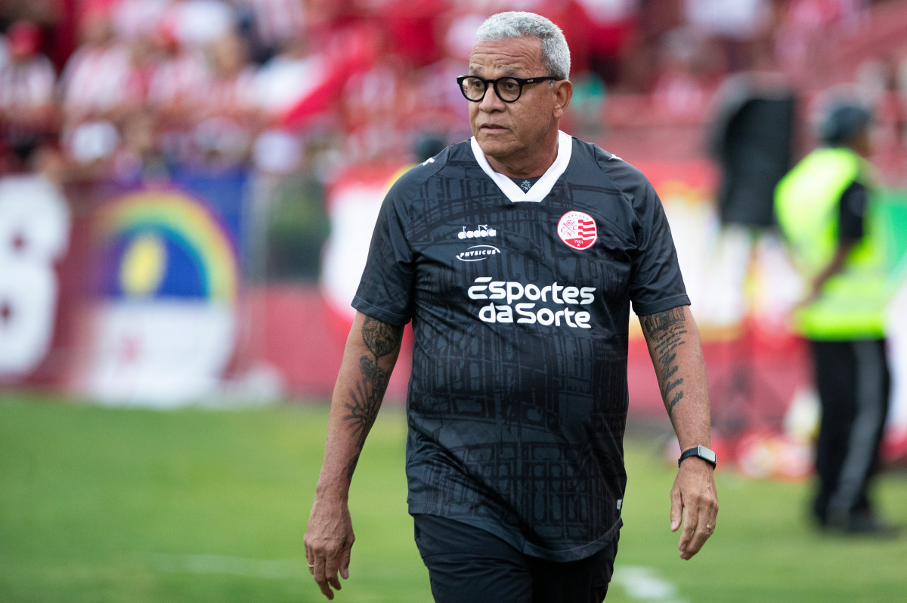

Novidades
Ultimas Noticias

Greve do Metrô do Recife fecha todas as 36 estações; linhas de ônibus recebem reforço
Todas as 36 estações do Metrô do Recife estão fechadas a partir desta segunda-feira (3), com o início da greve dos metroviários (veja vídeo acima). Por causa da paralisação do serviço, cerca de 170 mil passageiros precisam buscar alternativas para se deslocar na Região Metropolitana. Ônibus foram reforçados, com circulação de linhas especiais.
Ler mais
Recife Antigo ganha novo centro cultural
A Zona Sul do Recife se prepara para receber um novo e sofisticado centro cultural dedicado à cultura, gastronomia e ao desenvolvimento humano. O Centro Cultural Instituto Marcos Hacker de Melo (Instituto MHM) será inaugurado no próximo dia 29 de junho, às 17h, em um prédio recém-construído na Avenida Domingos Ferreira, esquina com a Rua Tenente João Cícero, nº 258, no coração de Boa Viagem, nas proximidades de colégios, serviços e um dos principais corredores de circulação da cidade.
Ler mais
Prefeitura do Recife anuncia homenageados do Carnaval 2026: Lenine, Carmen Virgínia e o Bloco Madeira do Rosarinho.
O Carnaval do Recife de 2026 já tem seus homenageados definidos. A Prefeitura anunciou que o cantor Lenine, a iabassê Carmen Virgínia e o tradicional Bloco Carnavalesco Misto Madeira do Rosarinho, que completa 100 anos no próximo ano, serão os grandes reverenciados da festa que celebra a cultura e a identidade recifense.
Ler maisFim da linha: Sport anuncia saída de Daniel Paulista
Após uma temporada difícil, o treinador não é mais o comandante da equipe...
Ler maisHomem da Meia-Noite anuncia tema do desfile e homenageados para o Carnaval de 2026; confira
O famoso bloco de carnaval revelou suas novidades para a próxima folia...
Ler maisO Recife regulamentou a utilização e o armazenamento de armas de fogo funcionais por guardas civis municipais.
O decreto nº 39.173 foi publicado no Diário Oficial da cidade do último sábado (25) e está em vigor desde então.
Ler maisDatafolha aponta Raquel Lyra e João Campos empatados na preferência espontânea para o Governo de PE
Levantamento foi realizado entre os dias 20 e 22 de outubro e ouviu 1.200 eleitores.
Ler maisRecuperação judicial: confira quem são os principais credores do Santa Cruz
Ex-jogadores e ex-dirigente lideram lista de credores do Santa Cruz na recuperação judicial
Ler mais
"Sempre admirei o futebol pernambucano", diz Hélio dos Anjos, técnico do Náutico
Em entrevista exclusiva ao Diario de Pernambucano, o treinador do Náutico falou sobre momentos da atual temporada e projetou futuro no Timbu
Ler mais